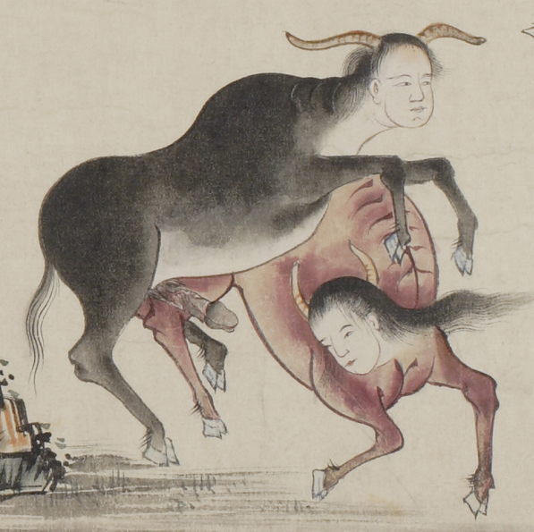

人頭の牛のような夫婦。共に牛のような体をしており、頭には角が2本生えている。蹄はふたつに割れている。男の方は黒い体で腹部は白く、性器を露出させている。女の方は赤い体をしている。
出典：親書誌：U426_nichibunken_0058：地獄草紙絵巻；ジゴクゾウシエマキ／日付：2006／資源識別子：U426_nichibunken_0058_0007_0000
Copyright (c)2010- International Research Center for Japanese Studies, Kyoto, Japan. All rights reserved.